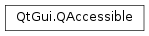

QAccessible¶
Synopsis¶
Static functions¶
- def
accessibleInterface(uniqueId) - def
cleanup() - def
deleteAccessibleInterface(uniqueId) - def
isActive() - def
qAccessibleTextBoundaryHelper(cursor, boundaryType) - def
queryAccessibleInterface(arg__1) - def
registerAccessibleInterface(iface) - def
setActive(active) - def
setRootObject(object) - def
uniqueId(iface) - def
updateAccessibility(event)
Detailed Description¶
The
PySide2.QtGui.QAccessibleclass provides enums and static functions related to accessibility.This class is part of Accessibility for QWidget Applications.
Accessible applications can be used by people who are not able to use applications by conventional means.
The functions in this class are used for communication between accessible applications (also called AT Servers) and accessibility tools (AT Clients), such as screen readers and braille displays. Clients and servers communicate in the following way:
- AT Servers notify the clients about events through calls to the
PySide2.QtGui.QAccessible.updateAccessibility()function.- AT Clients request information about the objects in the server. The
PySide2.QtGui.QAccessibleInterfaceclass is the core interface, and encapsulates this information in a pure virtual API. Implementations of the interface are provided by Qt through thePySide2.QtGui.QAccessible.queryAccessibleInterface()API.The communication between servers and clients is initialized by the
PySide2.QtGui.QAccessible.setRootObject()function. Function pointers can be installed to replace or extend the default behavior of the static functions inPySide2.QtGui.QAccessible.Qt supports Microsoft Active Accessibility (MSAA), macOS Accessibility, and the Unix/X11 AT-SPI standard. Other backends can be supported using QAccessibleBridge.
In the Unix/X11 AT-SPI implementation, applications become accessible when two conditions are met:
- org.a11y.Status.IsEnabled DBus property is true
- org.a11y.Status.ScreenReaderEnabled DBus property is true
An alternative to setting the DBus AT-SPI properties is to set the QT_LINUX_ACCESSIBILITY_ALWAYS_ON environment variable.
In addition to
PySide2.QtGui.QAccessible‘s static functions, Qt offers one generic interface,PySide2.QtGui.QAccessibleInterface, that can be used to wrap all widgets and objects (e.g.,PySide2.QtWidgets.QPushButton). This single interface provides all the metadata necessary for the assistive technologies. Qt provides implementations of this interface for its built-in widgets as plugins.When you develop custom widgets, you can create custom subclasses of
PySide2.QtGui.QAccessibleInterfaceand distribute them as plugins (usingQAccessiblePlugin) or compile them into the application. Likewise, Qt’s predefined accessibility support can be built as plugin (the default) or directly into the Qt library. The main advantage of using plugins is that the accessibility classes are only loaded into memory if they are actually used; they don’t slow down the common case where no assistive technology is being used.Qt also includes two convenience classes,
PySide2.QtGui.QAccessibleObjectandPySide2.QtWidgets.QAccessibleWidget, that inherit fromPySide2.QtGui.QAccessibleInterfaceand provide the lowest common denominator of metadata (e.g., widget geometry, window title, basic help text). You can use them as base classes when wrapping your customPySide2.QtCore.QObjectorPySide2.QtWidgets.QWidgetsubclasses.See also
-
PySide2.QtGui.QAccessible.Event¶ This enum type defines accessible event types.
Internal: Used when creating subclasses of
PySide2.QtGui.QAccessibleEvent.Constant Description QAccessible.AcceleratorChanged The keyboard accelerator for an action has been changed. QAccessible.ActionChanged An action has been changed. QAccessible.ActiveDescendantChanged QAccessible.Alert A system alert (e.g., a message from a PySide2.QtWidgets.QMessageBox)QAccessible.AttributeChanged QAccessible.ContextHelpEnd Context help ( PySide2.QtWidgets.QWhatsThis) for an object is finished.QAccessible.ContextHelpStart Context help ( PySide2.QtWidgets.QWhatsThis) for an object is initiated.QAccessible.DefaultActionChanged The default QAccessible::Action for the accessible object has changed. QAccessible.DescriptionChanged The object’s QAccessible.Descriptionchanged.QAccessible.DialogEnd A dialog ( PySide2.QtWidgets.QDialog) has been hiddenQAccessible.DialogStart A dialog ( PySide2.QtWidgets.QDialog) has been set visible.QAccessible.DocumentContentChanged The contents of a text document have changed. QAccessible.DocumentLoadComplete A document has been loaded. QAccessible.DocumentLoadStopped A document load has been stopped. QAccessible.DocumentReload A document reload has been initiated. QAccessible.DragDropEnd A drag and drop operation is about to finished. QAccessible.DragDropStart A drag and drop operation is about to be initiated. QAccessible.Focus An object has gained keyboard focus. QAccessible.ForegroundChanged A window has been activated (i.e., a new window has gained focus on the desktop). QAccessible.HelpChanged The QAccessible.Helptext property of an object has changed.QAccessible.HyperlinkEndIndexChanged The end position of the display text for a hypertext link has changed. QAccessible.HyperlinkNumberOfAnchorsChanged The number of anchors in a hypertext link has changed, perhaps because the display text has been split to provide more than one link. QAccessible.HyperlinkSelectedLinkChanged The link for the selected hypertext link has changed. QAccessible.HyperlinkStartIndexChanged The start position of the display text for a hypertext link has changed. QAccessible.HypertextChanged The display text for a hypertext link has changed. QAccessible.HypertextLinkActivated A hypertext link has been activated, perhaps by being clicked or via a key press. QAccessible.HypertextLinkSelected A hypertext link has been selected. QAccessible.HypertextNLinksChanged QAccessible.LocationChanged An object’s location on the screen has changed. QAccessible.MenuCommand A menu item is triggered. QAccessible.MenuEnd A menu has been closed (Qt uses for all menus). QAccessible.MenuStart A menu has been opened on the menubar (Qt uses for all menus). QAccessible.NameChanged The QAccessible.Nameproperty of an object has changed.QAccessible.ObjectAttributeChanged QAccessible.ObjectCreated A new object is created. QAccessible.ObjectDestroyed An object is deleted. QAccessible.ObjectHide An object is hidden; for example, with QWidget.hide(). Any children the object that is hidden has do not send this event. It is not sent when an object is hidden as it is being obcured by others.QAccessible.ObjectReorder A layout or item view has added, removed, or moved an object (Qt does not use this event). QAccessible.ObjectShow An object is displayed; for example, with QWidget.show().QAccessible.PageChanged QAccessible.ParentChanged An object’s parent object changed. QAccessible.PopupMenuEnd A pop-up menu has closed. QAccessible.PopupMenuStart A pop-up menu has opened. QAccessible.ScrollingEnd A scrollbar scroll operation has ended (the mouse has released the slider handle). QAccessible.ScrollingStart A scrollbar scroll operation is about to start; this may be caused by a mouse press on the slider handle, for example. QAccessible.SectionChanged QAccessible.SelectionAdd An item has been added to the selection in an item view. QAccessible.SelectionRemove An item has been removed from an item view selection. QAccessible.Selection The selection has changed in a menu or item view. QAccessible.SelectionWithin Several changes to a selection has occurred in an item view. QAccessible.SoundPlayed A sound has been played by an object The QAccessible.Stateof an object has changed. This value is used internally for thePySide2.QtGui.QAccessibleStateChangeEvent.QAccessible.TableCaptionChanged A table caption has been changed. QAccessible.TableColumnDescriptionChanged The description of a table column, typically found in the column’s header, has been changed. QAccessible.TableColumnHeaderChanged A table column header has been changed. The model providing data for a table has been changed. QAccessible.TableRowDescriptionChanged The description of a table row, typically found in the row’s header, has been changed. QAccessible.TableRowHeaderChanged A table row header has been changed. QAccessible.TableSummaryChanged The summary of a table has been changed. The caret has moved in an editable widget. The caret represents the cursor position in an editable widget with the input focus. QAccessible.TextColumnChanged A text column has been changed. Text has been inserted into an editable widget. Text has been removed from an editable widget. The selected text has changed in an editable widget. The text has been update in an editable widget. The QAccessible.Valueof an object has changed.QAccessible.VisibleDataChanged The values for this enum are defined to be the same as those defined in the IAccessible2 and MSAA specifications.
-
PySide2.QtGui.QAccessible.Role¶ This enum defines the role of an accessible object. The roles are:
Constant Description QAccessible.AlertMessage An object that is used to alert the user. QAccessible.Animation An object that displays an animation. QAccessible.Application The application’s main window. QAccessible.Assistant An object that provids interactive help. QAccessible.Border An object that represents a border. QAccessible.ButtonDropDown A button that drops down a list of items. QAccessible.ButtonDropGrid A button that drops down a grid. QAccessible.ButtonMenu A button that drops down a menu. QAccessible.Canvas An object that displays graphics that the user can interact with. QAccessible.Caret An object that represents the system caret (text cursor). QAccessible.Cell A cell in a table. QAccessible.Chart An object that displays a graphical representation of data. QAccessible.CheckBox An object that represents an option that can be checked or unchecked. Some options provide a “mixed” state, e.g. neither checked nor unchecked. QAccessible.Client The client area in a window. QAccessible.Clock A clock displaying time. QAccessible.ColorChooser A dialog that lets the user choose a color. QAccessible.Column A column of cells, usually within a table. QAccessible.ColumnHeader A header for a column of data. QAccessible.ComboBox A list of choices that the user can select from. QAccessible.ComplementaryContent A part of the document or web page that is complementary to the main content, usually a landmark (see WAI-ARIA). QAccessible.Cursor An object that represents the mouse cursor. QAccessible.Desktop The object represents the desktop or workspace. QAccessible.Dial An object that represents a dial or knob. QAccessible.Dialog A dialog box. QAccessible.Document A document, for example in an office application. QAccessible.EditableText Editable text such as a line or text edit. QAccessible.Equation An object that represents a mathematical equation. QAccessible.Footer A footer in a page (usually in documents). QAccessible.Form A web form containing controls. QAccessible.Graphic A graphic or picture, e.g. an icon. QAccessible.Grip A grip that the user can drag to change the size of widgets. QAccessible.Grouping An object that represents a logical grouping of other objects. QAccessible.Heading A heading in a document. QAccessible.HelpBalloon An object that displays help in a separate, short lived window. QAccessible.HotkeyField A hotkey field that allows the user to enter a key sequence. QAccessible.Indicator An indicator that represents a current value or item. QAccessible.LayeredPane An object that can contain layered children, e.g. in a stack. QAccessible.Link A link to something else. QAccessible.List A list of items, from which the user can select one or more items. QAccessible.ListItem An item in a list of items. QAccessible.MenuBar A menu bar from which menus are opened by the user. QAccessible.MenuItem An item in a menu or menu bar. QAccessible.NoRole The object has no role. This usually indicates an invalid object. QAccessible.Note A section whose content is parenthetic or ancillary to the main content of the resource. QAccessible.PageTab A page tab that the user can select to switch to a different page in a dialog. QAccessible.PageTabList A list of page tabs. QAccessible.Paragraph A paragraph of text (usually found in documents). QAccessible.Pane A generic container. QAccessible.PopupMenu A menu which lists options that the user can select to perform an action. QAccessible.ProgressBar The object displays the progress of an operation in progress. QAccessible.PropertyPage A property page where the user can change options and settings. QAccessible.Button A button. QAccessible.RadioButton An object that represents an option that is mutually exclusive with other options. QAccessible.Row A row of cells, usually within a table. QAccessible.RowHeader A header for a row of data. QAccessible.ScrollBar A scroll bar, which allows the user to scroll the visible area. QAccessible.Section A section (in a document). QAccessible.Separator A separator that divides space into logical areas. QAccessible.Slider A slider that allows the user to select a value within a given range. QAccessible.Sound An object that represents a sound. QAccessible.SpinBox A spin box widget that allows the user to enter a value within a given range. QAccessible.Splitter A splitter distributing available space between its child widgets. QAccessible.StaticText Static text, such as labels for other widgets. QAccessible.StatusBar A status bar. QAccessible.Table A table representing data in a grid of rows and columns. QAccessible.Terminal A terminal or command line interface. QAccessible.TitleBar The title bar caption of a window. QAccessible.ToolBar A tool bar, which groups widgets that the user accesses frequently. QAccessible.ToolTip A tool tip which provides information about other objects. QAccessible.Tree A list of items in a tree structure. QAccessible.TreeItem An item in a tree structure. QAccessible.UserRole The first value to be used for user defined roles. QAccessible.WebDocument HTML document, usually in a browser. QAccessible.Whitespace Blank space between other objects. QAccessible.Window A top level window.
-
PySide2.QtGui.QAccessible.Text¶ This enum specifies string information that an accessible object returns.
Constant Description QAccessible.Name The name of the object. This can be used both as an identifier or a short description by accessible clients. QAccessible.Description A short text describing the object. QAccessible.Value The value of the object. QAccessible.Help A longer text giving information about how to use the object. QAccessible.Accelerator The keyboard shortcut that executes the object’s default action. QAccessible.UserText The first value to be used for user defined text.
-
PySide2.QtGui.QAccessible.RelationFlag¶ This enum type defines bit flags that can be combined to indicate the relationship between two accessible objects.
Constant Description QAccessible.Label The first object is the label of the second object. QAccessible.Labelled The first object is labelled by the second object. QAccessible.Controller The first object controls the second object. QAccessible.Controlled The first object is controlled by the second object. QAccessible.AllRelations Used as a mask to specify that we are interesting in information about all relations Implementations of relations() return a combination of these flags. Some values are mutually exclusive.
-
PySide2.QtGui.QAccessible.InterfaceType¶ PySide2.QtGui.QAccessibleInterfacesupports several sub interfaces. In order to provide more information about some objects, their accessible representation should implement one or more of these interfaces.Note
When subclassing one of these interfaces,
QAccessibleInterface.interface_cast()needs to be implemented.Constant Description QAccessible.TextInterface For text that supports selections or is more than one line. Simple labels do not need to implement this interface. For text that can be edited by the user. QAccessible.ValueInterface For objects that are used to manipulate a value, for example slider or scroll bar. QAccessible.ActionInterface For interactive objects that allow the user to trigger an action. Basically everything that allows for example mouse interaction. For objects that represent an image. This interface is generally less important. QAccessible.TableInterface For lists, tables and trees. QAccessible.TableCellInterface For cells in a object. See also
QAccessibleInterface.interface_cast()PySide2.QtGui.QAccessibleTextInterfacePySide2.QtGui.QAccessibleValueInterfaceQAccessibleActionInterfaceQAccessibleTableInterfacePySide2.QtGui.QAccessibleTableCellInterface
-
PySide2.QtGui.QAccessible.TextBoundaryType¶ This enum describes different types of text boundaries. It follows the IAccessible2 API and is used in the
PySide2.QtGui.QAccessibleTextInterface.Constant Description QAccessible.CharBoundary Use individual characters as boundary. QAccessible.WordBoundary Use words as boundaries. QAccessible.SentenceBoundary Use sentences as boundary. QAccessible.ParagraphBoundary Use paragraphs as boundary. QAccessible.LineBoundary Use newlines as boundary. QAccessible.NoBoundary No boundary (use the whole text).
-
static
PySide2.QtGui.QAccessible.accessibleInterface(uniqueId)¶ Parameters: uniqueId – long Return type: PySide2.QtGui.QAccessibleInterfaceReturns the
PySide2.QtGui.QAccessibleInterfacebelonging to theid.Returns 0 if the id is invalid.
-
static
PySide2.QtGui.QAccessible.cleanup()¶
-
static
PySide2.QtGui.QAccessible.deleteAccessibleInterface(uniqueId)¶ Parameters: uniqueId – long Removes the interface belonging to this
idfrom the cache and deletes it. The id becomes invalid an may be re-used by the cache.
-
static
PySide2.QtGui.QAccessible.isActive()¶ Return type: PySide2.QtCore.boolReturns
trueif the platform requested accessibility information.This function will return false until a tool such as a screen reader accessed the accessibility framework. It is still possible to use
QAccessible.queryAccessibleInterface()even if accessibility is not active. But there will be no notifications sent to the platform.It is recommended to use this function to prevent expensive notifications via
PySide2.QtGui.QAccessible.updateAccessibility()when they are not needed.
-
static
PySide2.QtGui.QAccessible.qAccessibleTextBoundaryHelper(cursor, boundaryType)¶ Parameters: - cursor –
PySide2.QtGui.QTextCursor - boundaryType –
PySide2.QtGui.QAccessible.TextBoundaryType
Return type: getBoundaries is a helper function to find the accessible text boundaries for
PySide2.QtGui.QTextCursorbased documents. documentCursor a valid cursor bound to the document (not null). It needs to ba at the position to look for the boundary boundaryType the type of boundary to find Returns the boundaries as pair- cursor –
-
static
PySide2.QtGui.QAccessible.queryAccessibleInterface(arg__1)¶ Parameters: arg__1 – PySide2.QtCore.QObjectReturn type: PySide2.QtGui.QAccessibleInterfaceIf a
PySide2.QtGui.QAccessibleInterfaceimplementation exists for the givenobject, this function returns a pointer to the implementation; otherwise it returns 0.The function calls all installed factory functions (from most recently installed to least recently installed) until one is found that provides an interface for the class of
object. If no factory can provide an accessibility implementation for the class the function loads installed accessibility plugins, and tests if any of the plugins can provide the implementation.If no implementation for the object’s class is available, the function tries to find an implementation for the object’s parent class, using the above strategy.
All interfaces are managed by an internal cache and should not be deleted.
-
static
PySide2.QtGui.QAccessible.registerAccessibleInterface(iface)¶ Parameters: iface – PySide2.QtGui.QAccessibleInterfaceReturn type: long Call this function to ensure that manually created interfaces are properly memory managed.
Must only be called exactly once per interface
iface. This is implicitly called when callingPySide2.QtGui.QAccessible.queryAccessibleInterface(), calling this function is only required when QAccessibleInterfaces are instantiated with the “new” operator. This is not recommended, whenever possible use the default functions and letPySide2.QtGui.QAccessible.queryAccessibleInterface()take care of this.When it is necessary to reimplement the
QAccessibleInterface.child()function and returning the child after constructing it, this function needs to be called.
-
static
PySide2.QtGui.QAccessible.setActive(active)¶ Parameters: active – PySide2.QtCore.boolSee also
-
static
PySide2.QtGui.QAccessible.setRootObject(object)¶ Parameters: object – PySide2.QtCore.QObjectSets the root object of the accessible objects of this application to
object. All other accessible objects are reachable using object navigation from the root object.Normally, it isn’t necessary to call this function, because Qt sets the
PySide2.QtWidgets.QApplicationobject as the root object immediately before the event loop is entered inQApplication.exec().Use QAccessible::installRootObjectHandler() to redirect the function call to a customized handler function.
-
static
PySide2.QtGui.QAccessible.uniqueId(iface)¶ Parameters: iface – PySide2.QtGui.QAccessibleInterfaceReturn type: long Returns the unique ID for the
PySide2.QtGui.QAccessibleInterfaceiface.
-
static
PySide2.QtGui.QAccessible.updateAccessibility(event)¶ Parameters: event – PySide2.QtGui.QAccessibleEventNotifies about a change that might be relevant for accessibility clients.
eventprovides details about the change. These include the source of the change and the nature of the change. Theeventshould contain enough information give meaningful notifications.For example, the type
ValueChangeindicates that the position of a slider has been changed.Call this function whenever the state of your accessible object or one of its sub-elements has been changed either programmatically (e.g. by calling
QLabel.setText()) or by user interaction.If there are no accessibility tools listening to this event, the performance penalty for calling this function is small, but if determining the parameters of the call is expensive you can test
QAccessible.isActive()to avoid unnecessary computation.
© 2018 The Qt Company Ltd. Documentation contributions included herein are the copyrights of their respective owners. The documentation provided herein is licensed under the terms of the GNU Free Documentation License version 1.3 as published by the Free Software Foundation. Qt and respective logos are trademarks of The Qt Company Ltd. in Finland and/or other countries worldwide. All other trademarks are property of their respective owners.